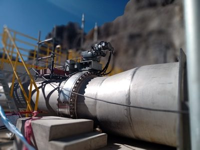

SERVICIO 01 / 12
Ingeniería
Desarrollo de ingeniería a nivel conceptual, básica y de detalle para los sectores industrial, minería, energía, petróleo y gas.
- Proyectos civiles y mecánicos
- Electricidad
- Instrumentación y control
- Ingeniería conceptual, básica y de detalle